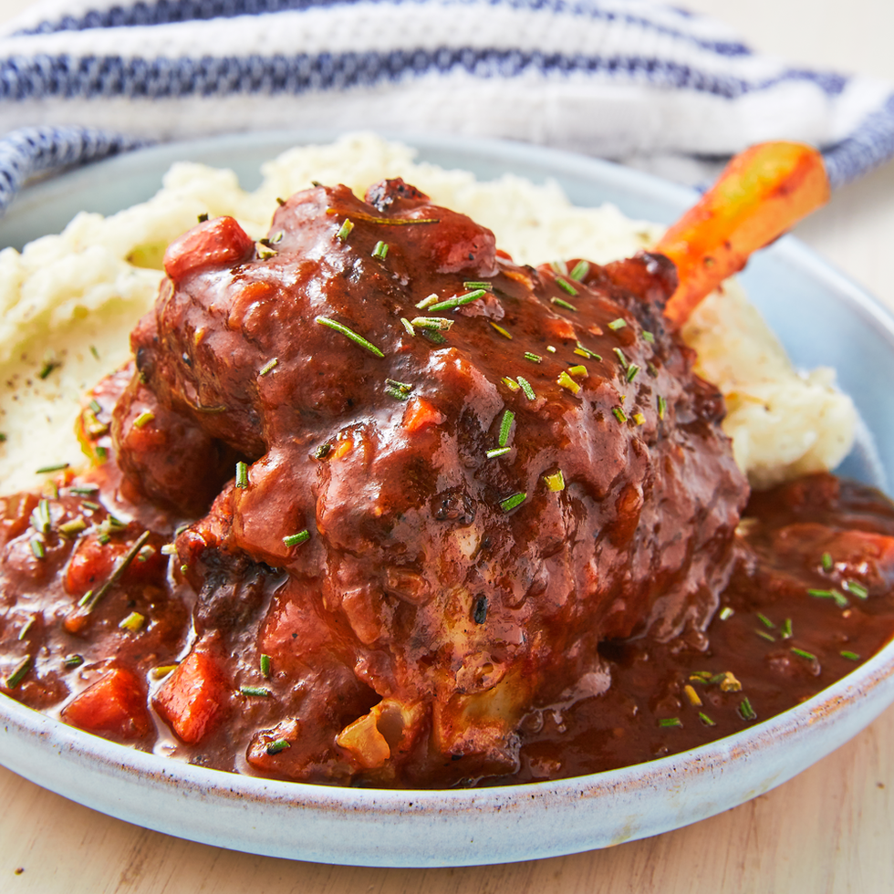

A braised lamb recipe

A ate this today it was so good wow
Ingredients
- lamb shanks
- parsley
- rosemary
- onions
- carrots
- sweet potato
- butter
- broth
- wine
- tomato paste
- tomato
Recipe
- marinade the lamb shanks in salt and olive oil, let sit for 1-2 hours
- fry the lamb shanks hard, just brown the sides, put them aside
- carmelize onions in butter, then add carrots, then add the tomato. Fry them a but then add red wine.
Let that simmer a bit and then through in the tomato paste
- add in the broth and then the lamb shanks and sweet potato. Once the pan is simmering move
to an oven pan and put into a preheated oven of 150 celcius. Let it braise for 3 hours
Home